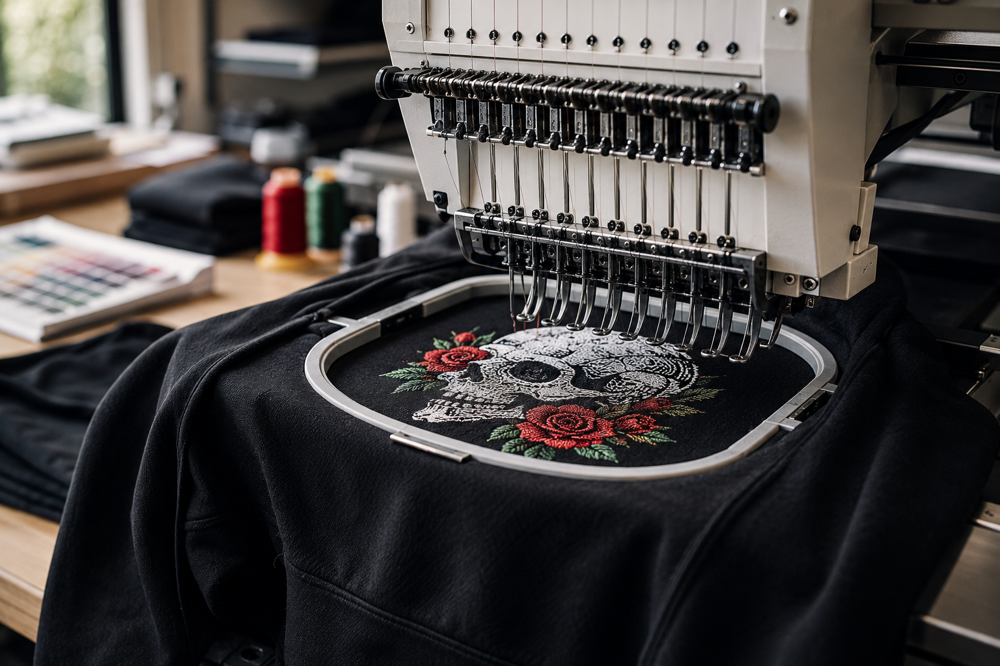

MA2K / Production
EMBROIDERY
A premium, dimensional finish for hats, polos, jackets, uniforms and branded apparel.
01


Production method
Thread gives a mark permanence.
Why it works
A process matched to the purpose.
Best forHats, polos, outerwear and uniforms
StrengthProfessional texture and long wear
LocalNew Bedford, Massachusetts
- Left-chest logosAvailable
- Hats and beaniesAvailable
- Jackets and workwearAvailable
- Names and personalizationAvailable